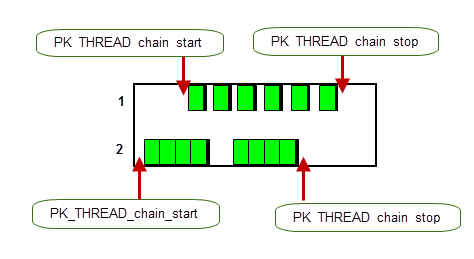
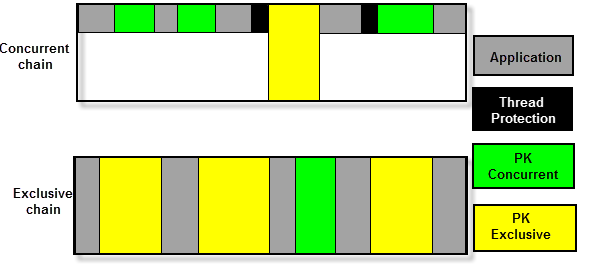

| |
Calling Parasolid From Multiple Threads |
| <<< Introduction To Session Support | Chapters | Symmetric Multi-Processing In Parasolid >>> |
Parasolid is thread-safe, in that it can be called from multiple threads within an application safely. Threads that an application sends into Parasolid are called application threads. They are not the same thing as the internal worker threads that are created by Parasolid SMP (as described in Chapter 115, “Symmetric Multi-Processing In Parasolid”). If Parasolid SMP is enabled, calling an SMP-enabled function in an application thread causes Parasolid to create and use worker threads.
The Parasolid PK and KI APIs manage multiple application threads to ensure safety.
In addition, Parasolid offers the ability to lock one or more partitions to an application thread using PK_THREAD_lock_partition which is described in the table in Section 114.2, “How to set up and use application threads”.
Parasolid API functions can behave as one or more of the following types:
To achieve this, Parasolid has a queuing system within the PK and KI API layers, which operates as follows:
Parasolid can be called from multiple application threads on all available platforms.
The PK Interface Programming Reference Manual contains a list of which PK functions are exclusive, concurrent or locally exclusive.
|
Note: All KI functions are exclusive. |
If your application only ever uses a single thread to call Parasolid, you need to make sure that it has a large enough stack. The initial thread used to start a program automatically has a large enough stack in general, but other threads that your application creates may need to have their stack size increased. For details of stack sizes, see Section 5.5, “Stack sizes”, in the Parasolid Installation Notes.
Note: When you are only using a single thread to call Parasolid, you should consider your whole session to be a single thread chain. When setting up the Parasolid session in an application, it is recommended to start a single thread chain with the thread
type
set to PK_THREAD_chain_exclusive_c to obtain optimal performance. It is the responsibility of the application to ensure that only a single calling thread is used. See Section 114.5, “Thread chaining” for more information about thread chaining. |
You can use the following PK functions to manage application threads in Parasolid. See the documentation for each individual function for full details.
|
Returns whether it has been called from within the Parasolid kernel or from outside the kernel. |
|
|
This function returns the error handler for the calling thread (if one is registered), or NULL. |
|
|
This function returns whether the Parasolid interface is currently excluding other threads entering and whether the calling thread caused the exclusion. |
|
|
This function returns the name of the PK function being executed in the calling thread and the total recursion depth of its current call stack. |
|
|
This function asks whether the given PK functions will be run concurrently or exclusively in the calling thread. See Section 114.3, “Controlling function exclusivity” for more information. |
|
|
Returns the standard form of the most recent PK error in the calling thread. For more information on the PK_ERROR_sf_t structure returned, see Section 121.2.5, “PK_ERROR functions and their use”. |
|
|
This function returns the functions which are currently registered to the calling thread for allocating and freeing variable length information returned from the PK interface. |
|
|
This function returns all the partitions that are locked to the calling thread. |
|
|
This function starts chaining Parasolid functions in the calling thread. See Section 114.5, “Thread chaining” for more information. |
|
|
This function stops chaining Parasolid functions in the calling thread. See Section 114.5, “Thread chaining” for more information. |
|
|
This function tries to clear an exclusion that may be preventing other threads from entering Parasolid. |
|
|
Returns whether the calling thread is executing inside the kernel. |
|
|
This function tells you whether the calling thread is running in a chain, and returns information on the PK_THREAD_is_in_chain does not block other threads; for example, you can call it on a thread even if another thread is in an exclusive chain. |
|
|
This function locks specified partitions to the calling thread. This allows you to call locally exclusive functions from this thread simultaneously with other locally exclusive functions or concurrent functions from other threads. Alternatively, you can use the |
|
|
This function registers the given error handler to the calling thread. |
|
|
This function registers memory allocation and free functions to the calling thread for use in Parasolid when returning variable length information. |
|
|
This function sets whether the given PK functions will be run concurrently or exclusively in the calling thread. See Section 114.3, “Controlling function exclusivity” for more information. |
|
|
This function stores the given thread ID in the calling thread. |
|
|
This function restores Parasolid to a valid state for the calling thread, if necessary, when a PK function has not completed. This might happen when Parasolid calls the application’s error handler, but that handler never returns control to the PK function. |
|
|
This function unlocks and returns the partitions that were locked to the calling thread. |
You can use PK_THREAD_ask_function_run to find out whether functions are running exclusively or concurrently. In addition, for a small number of functions, you can use PK_THREAD_set_function_run to change whether those functions should run exclusively or concurrently in the current thread.
PK_THREAD_ask_function_run takes a list of functions - as identified using PK_FUNCTION_find - and returns a list of
run_values
that indicate how each specified function is running in the current thread. PK_THREAD_ask_function_run may return any of the following
run_values
:
|
The specified function is running concurrently, but can be made to run exclusively if desired. |
|
|
The specified function is running as locally exclusive, but can be made to run concurrently if desired. |
If, for a given function, the corresponding value in
run_values
is either PK_FUNCTION_run_mutable_conc_c or PK_FUNCTION_run_mutable_exc_c, then you can change the exclusivity of this function using PK_THREAD_set_function_run. This function takes similar arguments to PK_THREAD_ask_function_run, except that
run_values
is a received argument, rather than a returned argument. You should only specify the following
run_values
:
If you change an exclusive function to run concurrently and your application makes multiple calls to the concurrent function from different application threads, then each function call may run simultaneously.
If, for a given function, the value in
run_values
is set to PK_FUNCTION_run_mutable_exc_c then the corresponding functions will run as locally exclusive. If the thread has locked partitions, then these functions will run concurrently with functions in other threads that contain locked partitions.
Any changes you make to function exclusivity persist until either the value is changed again, or the Parasolid session is restarted.
Note: If you wish to call Parasolid’s rendering and faceting functions concurrently you can indicate that the GO functions registered by your application are thread-safe using the
go_thread_safe
option in PK_SESSION_register_fru_2. |
Since Parasolid is responsible for managing the system that queues calls to PK functions, it ensures that the queue never becomes blocked at any time: if a thread in your application is sending calls to Parasolid functions, and Parasolid is placing them in a queue, then the queue must keep “moving”: Parasolid never starves any application thread’s call for an indefinite period. For example, Parasolid guarantees never to continuously execute a list of concurrent PK functions being sent by several application threads if there is an exclusive function waiting for a point where no threads are inside Parasolid. Conversely, an exclusive function is not given priority over a concurrent function and cannot jump the queue if a concurrent function is already waiting.
The queue can only move as quickly as the PK function calls in the queue allow: if a given function in the queue takes an indefinite amount of time, then the queue will not move for this amount of time.
Parasolid depends on the local operating system with respect to scheduling multiple threads that are waiting for a shared resource, as well as locking fairness. See Section 114.5, “Thread chaining” for further information on ways you can control function queuing.
Thread chaining is used to improve the performance of the thread. With thread chaining, applications can speed up sections of their code by indicating where contiguous Parasolid functions can be chained together to reduce the overhead of unlocking and locking between each function.
The chaining starts when a call to PK_THREAD_chain_start is made by the application thread and ends when PK_THREAD_chain_stop is called. Thread chains can be either concurrent or exclusive, as specified by the
type
parameter, and each chain is individually controlled by calls to PK_THREAD_chain_start and PK_THREAD_chain_stop. In addition, each thread can split its chain into smaller links using the
length
option.
Figure 114-1 Thread chaining with multiple application threads
As Figure 114-1 shows, each numbered slot is an application thread in which a number of functions, either concurrent or exclusive, run. In the top image of this figure, functions are unchained and thread protection is called before and after every single function has been executed. In the bottom image, functions are chained together with thread protection only called between each linked set of functions.
Within the chain, there can be one or more chains with splits between each one. Figure 114-2 shows a chain that contains an application thread with a chain of length one and another one with a chain length of four. The function calls from each thread are linked into consecutive links of the length specified for that thread until PK_THREAD_chain_stop is called.
Figure 114-2 Thread chaining with a set chain link
If concurrent chains contain exclusive functions, the exclusive functions will run as though each resides in an exclusive chain of length one. If exclusive chains contain concurrent functions, the chain will run as though each function was exclusive. This can be seen in Figure 114-3.
Figure 114-3 Chains containing concurrent and exclusive functions
|
Note: Exclusive functions still prevent calls to concurrent functions in other threads from being executed. |
Examples of how chains may be used in applications for performance gain:
You can set version controls locally within a thread chain using the
local_level
option in PK_THREAD_chain_start. By setting these controls at a thread-level you can emulate old behaviour in different threads using different session settings in each thread.
To use the consolidated version control mechanism at a thread-level, set
local_level
to PK_THREAD_local_versioning_c. Once set, version controls will only affect subsequent operations within this thread chain. Calls to the same functions in other threads have no effect on operations within this thread chain. You can check the localisation level of a calling thread chain using PK_THREAD_ask_local_level.
See Chapter 117, “Version Controls” for more information on the version control mechanism.
There are two situations you need to consider when handling errors in an application that uses multiple application threads:
This section provides an overview of the error handling that Parasolid performs in these situations. For a more complete discussion of Parasolid error handling in general, see Chapter 121, “Error Handling”, and Chapter 122, “Signal Handling”.
If your application uses multiple threads, you need to ensure you handle each of these error types correctly.
After a serious error, the Parasolid session may be corrupt. In this case, other application threads need to be protected, and so they are prevented from entering Parasolid until the thread that caused the error has taken preventative measures.
The simplest and recommended way of cleaning up a session after a serious error is to roll the session or partition back. Rolling back the partition or session automatically clears the exclusion.
|
Note: If you cannot roll the session or partition back, then you can consider clearing the exclusion explicitly, by calling PK_THREAD_clear_exclusion. Calling PK_THREAD_clear_exclusion alone does not protect other threads from entering an invalid session. You therefore still need to ensure that the session is cleaned up before calling this function. If several concurrent PK functions all separately raise a serious error at the same time (and you have to use PK_THREAD_clear_exclusion), you should use PK_THREAD_ask_exclusion to discover which thread was responsible; do not rely on the order in which each function call returns from the PK to determine the responsible thread. |
After a fatal error, you must stop the modeller. This has the effect of turning off thread protection; if other threads were waiting, they will fail with the error PK_ERROR_modeller_not_started when the modeller is stopped.
If the error handler in your application code uses longjumping, then when a concurrent thread raises an error, your application must ensure that Parasolid is in a valid state before continuing, since other threads may potentially be inside Parasolid at the time of the error. You should call PK_THREAD_tidy to do this. PK_THREAD_tidy ensures that Parasolid is in a valid state for the calling thread whenever a longjump is made.
If your application’s error handler does not make use of longjumps then you do not need to take any special action when a concurrent thread raises an error.
Sometimes, several entities are involved in a given error. In such cases, Parasolid lets you control, for the calling thread, whether additional information about these entities is returned in the Parasolid Report using the following functions:
|
Enquire whether additional error information is returned in a Parasolid Report of type PK_REPORT_4_t. Default: PK_ERROR_reports_inherit_c. |
|
|
Specify whether additional error information is returned in a Parasolid Report of type PK_REPORT_4_t. Default: PK_ERROR_reports_inherit_c. |
For more information on these functions, see the PK Reference,
|
Note: If these functions are set to their default values, the calling thread will inherit its behaviour for thread error reporting from the current session setting functions PK_SESSION_ask_err_reports and PK_SESSION_set_err_reports. For information on these functions, see Section 116.8, “Managing the session settings when reporting errors involving multiple error entities”. |
| <<< Introduction To Session Support | Chapters | Symmetric Multi-Processing In Parasolid >>> |